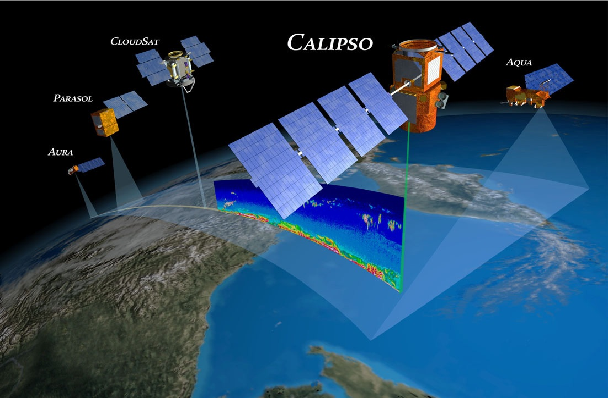

The unsustainable Industrial Revolution has caused permanent changes to the Earth’s atmosphere and soil. It is by many seen as the start of the Anthropocene era in which we now live (Industrial Revolution, Wikipedia). The inventions made during the Industrial Revolution caused humans started to emit more and more carbon dioxide and other forms of pollution (Wikipedia, 2022). Spacecrafts be seen as a result of the inventions made during the Industrial Revolution. For example, the steam engine, which was developed in the late 18th century, was one of the key technological innovations of the Industrial Revolution. It provided a reliable source of power that could be used to drive machinery and transportation, and it has also been used to power some of the early spacecrafts. Also, railroads can be seen as an invention made during the Industrial Revolution. Railroads are used for the transportation of spacecrafts to the landing side. More examples can be found but it is clear that spacecrafts would not have been possible without the Industrial Revolution.
Spacecrafts themselves also contribute in a negative way to the Anthropocene era. Only during the launch, spacecrafts can emit more than 4 times the amount of nitrogen oxides than the largest thermal power plant in the UK (Marais, 2021). Also, the amount of carbon dioxide per person is for spacecrafts 100 times higher than for an average commercial airplane flight (Shadijanova, 2021). There is also an additional problem which is that part of the emission of the spacecrafts will go directly into the upper part of the atmosphere, where even water can have a warming impact on the Earth (Gammon, 2021).
However, spacecrafts also contribute in various positive ways to fighting climate change. So are satellites providing us with information that makes wind turbines and solar cells more efficient (ESA, 2010). Satellite data is also used to locate vehicles and this is used by services like Google Maps to provide the most environment-friendly routes. The founder of Blue Origin Jeffrey Bezos proposed that polluting industries should be moved to space (Gammon, 2021). If the emissions by spacecrafts are less than the pollution of the factories placed in space this could also help in fighting climate change.
Another way in which spacecrafts help us fight climate change is by understanding the causes of climate change. Satellites provide us with information that shows variations in the Earth’s orbit and the amount of ultraviolet radiation reaching the Earth’s atmosphere which causes temperature changes (Derr, 2021). Satellites also help us understand the role of various gasses like carbon dioxide in the Earth’s atmosphere (Banino, 2021).
Satellites also capture the effects of climate change. The best example of this is the monitoring of the ice on the poles. Antarctica is currently approximately 61 times the size of the UK and thus is impossible to monitor from Earth. Some satellites are able to find differences in the shapes of the ice with accuracy at the centimeter level (Slater, 2022). These satellite images over the last 30 years show decreases in the amounts of ice at the poles and Greenland, also satellites information shows that the temperatures on Earth and especially around the North Pole have increased (Scientific Visualization Studio).
To conclude spacecrafts were made possible by the Industrial Revolution which started the Anthropocene era. Spacecrafts like the Industrial Revolution contribute negatively to this era. However, spacecrafts also contribute in many positive ways to this era. They help us understand the causes, make wind turbines and solar cells more efficient, and make us aware of the effects of climate change. Humanity should aim to use more renewable forms of energy, this way mitigating entire industries to space will not be necessary. Spacecrafts should help us understand and fight climate change. They can help us make life multi-planetary so that when something catastrophic happens on Earth humans will survive. Humans started this era and are the only ones that are able to reverse it. When we succeed we would very soon know because of the climate satellites monitoring the ice on the poles.